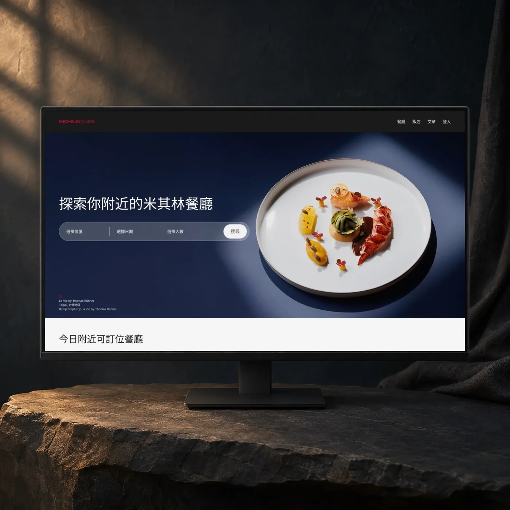

Michelin Guide
Website Redesign
在保留米其林高端品牌調性的前提下，讓使用者不必離開平台就能完成找餐廳到訂位。

概念性專案，與米其林指南官方無關。Restaurant imagery and brand assets © MICHELIN, used for conceptual purposes only.
問題：米其林指南收錄眾多星級餐廳，官網也有地圖與「線上訂位」篩選，但列表不會依所在位置顯示距離，想找附近的餐廳、查路線和評論，還是得跳到 Google Maps；想訂位時，「可供訂位」只代表餐廳有串接訂位系統，常常點進去選好時間，才發現今日已經客滿。
做法：在站內依所在位置列出附近餐廳與距離，加入今日可訂時段與三步驟訂位；並依 WCAG 2.2 AA 標準製作文字對比、建立包含所有狀態的元件，延伸到手機版。
結果：使用者不用離開平台，就能從找附近餐廳一路完成訂位；桌機和手機版的文字對比全部符合無障礙設計。
背景與問題
每年米其林公布新名單，我和親友都會上指南網站看今年有哪些餐廳。但看到感興趣的餐廳後，總得跳到 Google Maps 查路線和評論，來回幾次之後，想訂位的念頭也淡了。規劃 UI 案例時，我以這個經驗為起點，整理出三個問題：
- 找不到周遭米其林餐廳 官網有地圖檢視，但餐廳列表不顯示距離，只能用城市搜尋附近有什麼餐廳。
- 跳出平台 官網有營業時間和地圖，但沒有使用者評論，查路線也要開啟 Google 地圖。
- 訂位困難 「線上訂位」篩選只標示餐廳有沒有串接訂位系統。例如 2026 年 11 月查詢時，頤宮標示「可供訂位」，當天卻顯示「沒有可用時間段」。
註：做這個專案期間，官網也陸續優化 UI 介面，方向與本案相近。本案著重官網目前還沒有的兩件事：依所在位置找附近餐廳，以及直接顯示今天訂得到的時段。
專案限制：約 4 週、一人完成、沒有真實訂位資料。
使用者
米其林官方在招商頁（另開新分頁）形容他們的受眾是「高參與度的一般消費者與餐飲業者，都是美食愛好者與老饕」。我以這句話為基礎，再結合自己和親友的使用經驗，把和訂位最相關的使用者分成三類：
- 高端與商務饕客 找適合商務宴客、慶生、重要約會的餐廳，最看重三星與二星名單。
- 美食愛好者 把指南當成美食聖經和插旗清單，不只看高價位餐廳，也很關注高性價比的必比登推介。
- 觀光客與深度旅遊者 到陌生城市時，用米其林標籤降低踩雷風險，這也是指南當初創立的初衷。
餐飲業者也是官方提到的受眾，但他們用指南來觀察市場，較少用到訂位，所以不在這次的設計範圍內。
使用情境：使用者臨時有一場商務飯局，需要找一間高級餐廳。用米其林指南找到餐廳後，還得另外到 Google Maps 查路線和評論；要訂位時，許多餐廳標示「可供訂位」，點進去選好時間卻已經客滿。這時如果有「今日可訂時段」，就能直接看到今天還訂得到的餐廳。
研究與發現
我比較了三個訂位平台的做法：OpenTable 搜尋時就能看到當日可訂時段，功能性最完整；食べログ 可以依情境找餐廳，例如約會、商務、家庭聚餐，更貼近使用者的真實需求；The Fork 透過平台訂位能拿到折扣，讓使用者有理由在平台上訂位。
這次設計借鏡了 OpenTable 的當日可訂時段，以及食べログ 的情境分類，首頁的「主題特輯」就是依約會、商務、家庭聚餐分類。The Fork 的優惠機制則沒有納入，因為這次我想專注在兩件事：抓取使用者位置，以及讓訂位更順暢。

Sitemap 與 User Flow
設計決策
- 依所在位置找餐廳 使用者一進到首頁，網站就抓取所在地，依距離列出附近的米其林餐廳和必比登小吃，並標示距離。不管只是想知道附近有什麼，還是真的要訂位，都不用再跳到 Google Maps 自己對照位置。
- 今日可訂時段 我自己和身邊親友實際操作時都發現，每間餐廳的訂位系統不同。有的標示「可供訂位」，點進去選好人數和時間，卻顯示沒有可用時段。所以選擇將各家餐廳今日可訂的時段統整起來，直接顯示在餐廳頁和首頁，讓使用者不用逐間點進各家餐廳的訂位系統。
- 視覺 首頁搜尋器採用毛玻璃效果，讓搜尋器與 Hero Banner 自然融合，並以金色細線分隔三個輸入欄位，強化品牌細節。字型方面，標題用 Playfair Display 呼應高端歐式質感，內文用 Inter 確保易讀性。我原本想完整保留米其林目前的視覺調性，但做的過程中，覺得可以順應近年介面的趨勢做一些調整：毛玻璃質感、圓角矩形，以及更多留白，讓版面有呼吸感。
介面設計與設計系統
- 品牌系統 保留米其林主色 #BF0000、金色 #C9A84C、深黑 #1A1A1A；標題 Playfair Display、內文 Inter。
- 範圍 限縮在餐廳功能流程，不涉及飯店與文章頁面。

從 wireframe 到完成稿：版面架構維持不變，完成稿補上品牌視覺、今日可訂時段的狀態設計與無障礙修正。

Design System — 無障礙修正版

Foundations — Tokens

元件總表（一）按鈕、時段、表單欄位與桌機版版面 — 每個元件都包含所有狀態並標註對比數值

元件總表（二）卡片、評論、篩選標籤與手機版版面
桌機版


桌機版七個畫面：首頁、餐廳列表、餐廳詳細與訂位三步驟到成功頁
手機版


手機版八個畫面：首頁、餐廳列表、餐廳詳細與訂位三步驟、送出中到成功頁
我把訂位流程用到的按鈕、時段、表單欄位整理成元件，每個元件都包含預設、hover、focus、停用、錯誤等狀態，並標註對比數值。
臨時訂位大多在手機上完成，所以我把首頁、餐廳詳細頁和訂位三步驟做成 375px 的手機版。手機版沿用同一套元件與無障礙規則：按鈕、時段和選單的點擊範圍都至少 44px；可訂時段改成橫向滑動，讓已選時段保持在畫面中；照片卡片因為高度變矮，加強了底部漸層，讓文字對比維持在 4.5:1 以上。
無障礙設計
我檢查了設計稿初版，全部 262 個文字圖層的對比，有 50 處未達 WCAG 2.2 AA 標準：
- 次要文字 灰色 #888888 在白底只有 3.54:1，共 42 處，改為 #6B6B6B，提升到 5.33:1。
- 金色 品牌金 #C9A84C 在淺灰底只有 2.10:1。保留金色作為品牌色，但訂出使用規則：金色只放在深色底（7.62:1）或當作裝飾線；淺色底上的金色文字改用 #866D29（4.55:1）。
- 毛玻璃搜尋列 提示文字壓在毛玻璃上只有 2.32:1，改為淺色後提升到 7.55:1；外框與背景的對比 4.23:1，原本就符合 UI 元件 3:1 的標準，所以維持不變。
- 照片上的文字 主題特輯卡片的文字壓在照片上，最低只有 1.37:1。為符合無障礙設計，我將整張照片的遮罩加深到 60%，這樣做數值合格了，但照片變得太暗失去高級感。最後改成只在卡片下半部加一層漸層，照片上方維持原本的亮度。手機版卡片比較矮，再把漸層加強，桌機與手機的文字對比都提升到 5.5:1 以上。
- 最小字級 照片版權文字從 6px 放大到 10px。
修正前後
 修正前
修正後
修正前
修正後
 修正前
修正後
修正前
修正後
修正後，我將這些規則寫進設計系統，之後新增的畫面都依照同一套標準。

無障礙標註 — 焦點順序、標題層級、替代文字與 ARIA
除了修正對比，也製作了後續提供給工程的無障礙標註：Tab 鍵的焦點順序、標題層級、圖片替代文字，以及時段選擇與錯誤訊息的語意說明。例如時段列以 radio group 設計，按 Tab 只會停一次，組內用方向鍵切換，已滿的時段會被略過；電話欄位填錯時，錯誤訊息會即時被螢幕閱讀器唸出，送出時焦點自動移到第一個錯誤欄位。
互動與原型
訂位流程分三步驟，採左側餐廳摘要、右側表單的雙欄版面，讓使用者填寫時仍能看到所選餐廳，降低認知負擔。
訂位流程的各種狀態
除了正常流程，我也設計了訂位時會遇到的狀態。時段已滿時，以刪除線加上「已滿」文字表示，已選的時段加上勾選圖示；表單填錯時，欄位變成紅框，並說明如何修正；送出時，按鈕顯示「處理中…」並暫停點擊，避免重複訂位；完成後顯示訂位成功與確認信資訊；篩選後沒有結果時，提供一鍵清除篩選。每個狀態除了用顏色也用文字或圖示做表達。


錯誤、送出中、成功、無結果四個狀態
訂位流程操作示範（桌機／手機）
從首頁找到附近餐廳，選擇今日可訂時段，完成三步驟訂位。
反思
這次專案還有幾個不足。第一，我沒有做使用者測試；重做的話，會先用原型找 3–5 人測試，驗證「今日可訂時段」是否真的解決問題。第二，一開始只做了桌機版，手機版是後來才補上的，但臨時訂位大多是用手機，重做會先從手機版開始設計。第三，一開始沒有把無障礙納入考量，做完才發現有 50 處文字對比不足。修正後我將對比規則寫進設計系統；重做的話，會在最初建立色彩系統時就先驗證是否有達到無障礙設計標準，而不是後續測試完發現不足又重做一次。